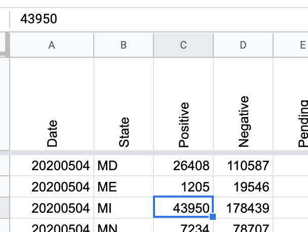

Michigan Data is wrong for 2020-05-04
Issue number 363
AJRepo opened this issue on May 4, 2020 at 6:37 pm
Data on page https://covidtracking.com/data/state/michigan/ shows the same # of new cases on 2020-05-04 and on 2020-05-03, ( 43,754 ) however the Michigan official data page https://www.michigan.gov/coronavirus/0,9753,7-406-98163_98173---,00.html shows a total of 43,950.
I’ve taken a screenshot of the Michigan page if you need that uploaded.
Here’s a screenshot that shows 43950 for the 2020-05-04.. The data for 2020-05-04 should be updated.
{kind=link}
It looks like our total positives didn’t get updated that day, they may have been updated after we published our data. I’ve updated it as follows – the Michigan total positives number for May 4 used to be 43,754, it is now 43950, indicating the +206 on the Michigan state site. 
And I noticed that the page https://covidtracking.com/data/state/michigan/ says for screenshot times: | 4:13 am, 10:13 am, 4:12 pm, 10:12 pm |
However it’s only 9:54 pm right now for Eastern Time so that might indicate something is wrong with the screenshots generated for the MI covid tracking page as well. (screenshot)